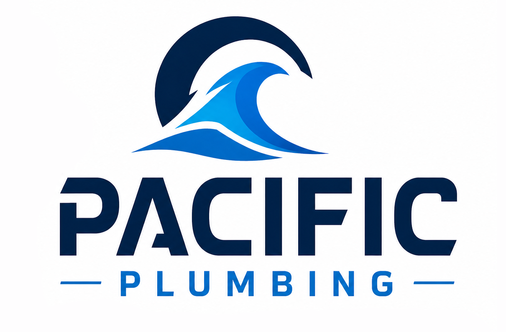
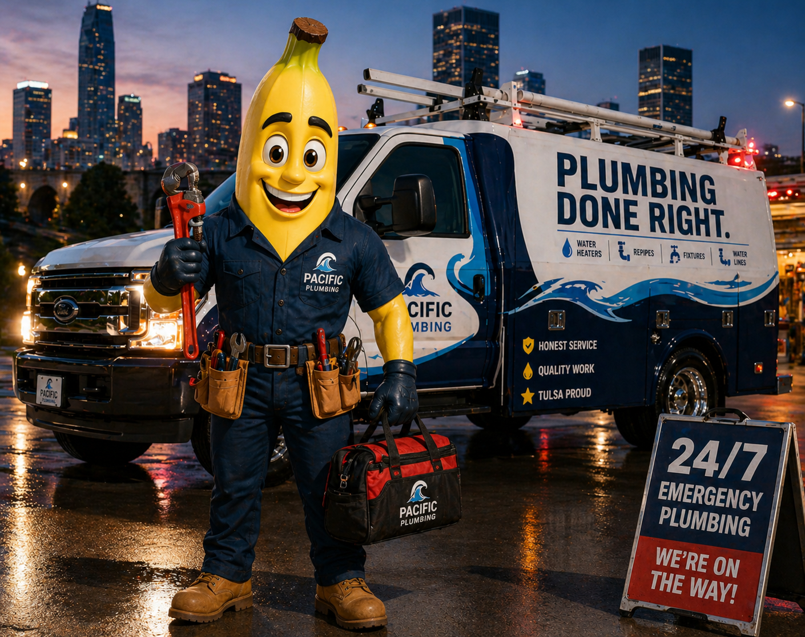

Urgent plumbing situations include
- Burst or actively leaking pipes
- Sewer backups or wastewater coming up through drains
- No hot water when the household depends on it
- Water line leaks, fixture failures, or shutoff problems

emergency plumber Tulsa
Burst pipes, backups, and sudden leaks need clear next steps. Pacific Plumbing helps Tulsa homeowners stabilize the situation, understand the problem, and get a practical fix underway.

If safe, shut off the water at the fixture or main valve and avoid using affected drains.
Yes, if water is spreading, damaging finishes, or cannot be shut off.
Pacific still explains the situation and practical repair path whenever possible.
Ready when you are
Call now or request a service window. Pacific Plumbing will help you understand the problem and choose the right fix.